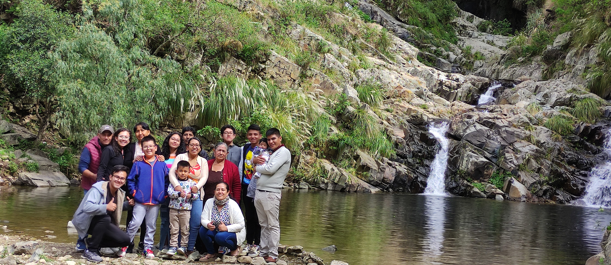
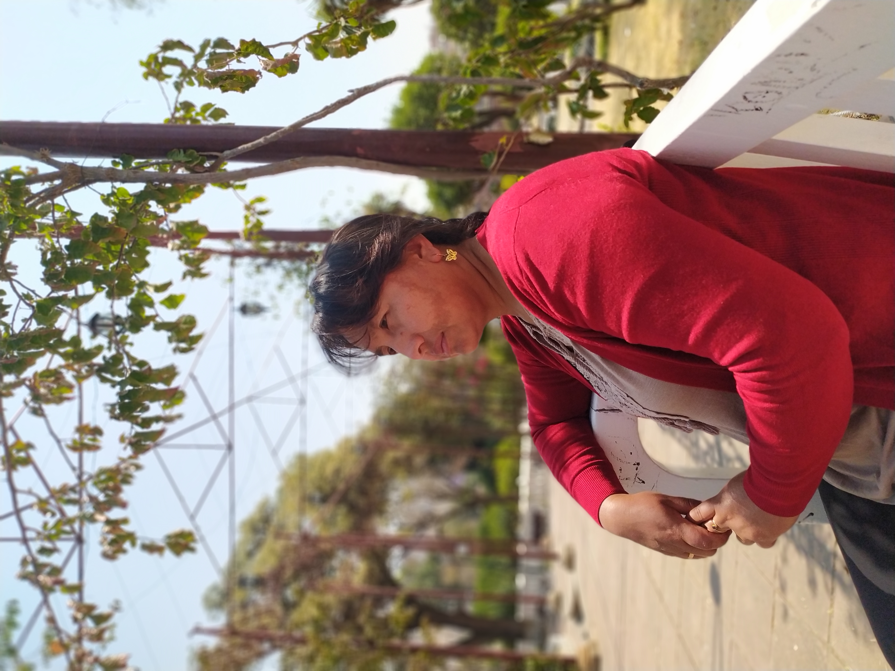
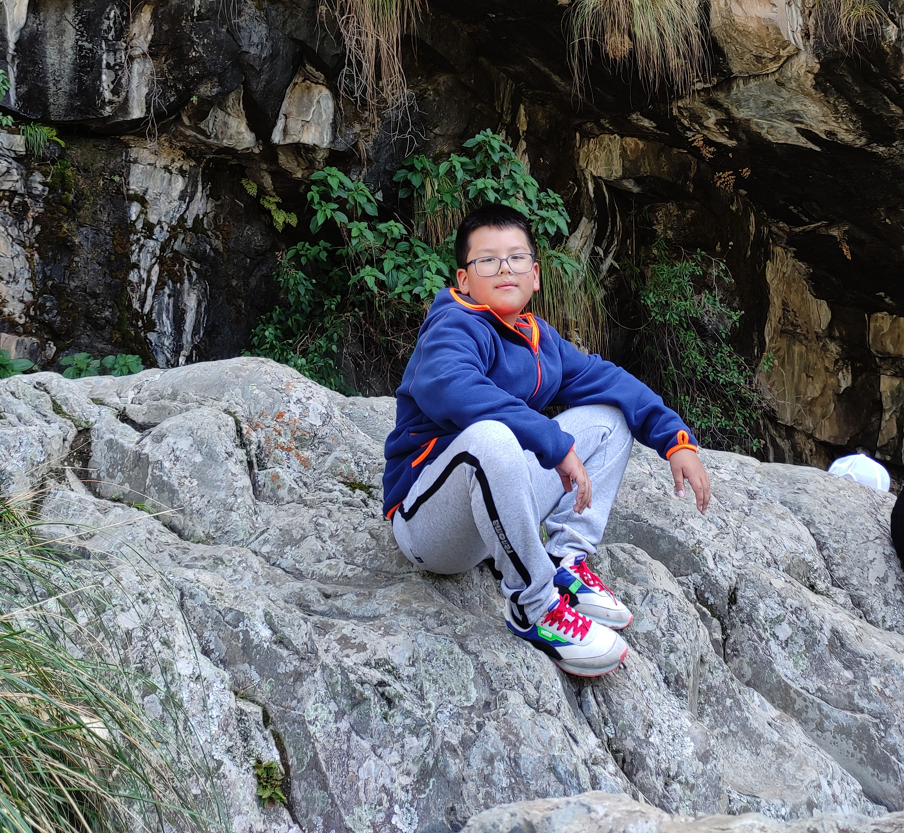

Mi Familia
Mi Familia
Esta es toda mi familia, pero en esta ocasión nos centraremos en mi núcleo central.
Más sobre mi Familia
-
Mi Padre

Su nombre es Jaime Fernandez Cervantes, tiene 47 años y nació el 17 de marzo de 1977. Estudió en el colegio San Juanillo, lugar donde conoció a mi madre. Estudió Ingeniería Mecánica, y al terminar su carrera se casó con mi madre. Nació en Santa Cruz, viene de una familia amplia y trabajadora. Hasta el momento ha cumplido varios de sus proyectos y tiene otros varios en los que está trabajando.
-
Mi Madre
Su nombre es Ruth Bethzabeth Acho Sánchez, tiene 46 años y nació el 14 de marzo de 1977. Estudió en el mismo colegio que mi padre. Estudió Enfermería en la Universidad San Francisco Xavier, decidió casarse con mi padre al terminar de estudiar. Nació en Millares, Potosí, viene de una familia pequeña. Después del primer año de matrimonio decidió tener a su primer bebé, y tuvo a mi hermana. Dos años después me tuvo a mí, y nueve años después tuvo a su último hijo.
-
Mi Hermana

Su nombre es Paola Alejandra Fernandez Acho, tiene 23 años y nació el 15 de abril del 2001, en la ciudad de Sucre. Estudió en el colegio San Juanillo, esto debido a que mis padres estudiaron en el mismo colegio, por lo tanto mis hermanos y yo estudiamos ahí. Estudió la carrera de Turismo, de la cual está esperando titularse y obtener su diplomado.
-
Mi Hermanito
Su nombre es Jaime Rafael Fernandez Acho, tiene 11 años y nació el 18 de abril de 2012, aquí en la ciudad de Sucre. Estudia en el colegio San Juanillo, Le gustan los videojuegos, es buen estudiante, le gusta jugar al tenis, hacer deporte y actualmente entrena Basquet.